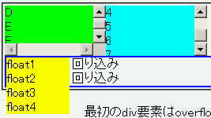
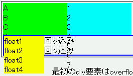
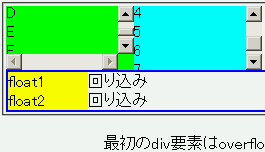

overflowプロパティのサポートが不完全であり、閲覧時に問題が発生することがある。
overflow:auto; を指定したとき、そのボックスからはみ出るフロートが見えなくなる。<div style="overflow:scroll; width:8em; height:4em; float:left; background:lime;"> A<br>B<br>C<br>D<br>E<br>F<br>G</div> <div style="overflow:auto; width:8em; height:4em; float:left; background:aqua;"> 1<br>2<br>3<br>4<br>5<br>6<br>7</div> <div style="overflow:auto; clear:left; border:2px solid blue;"> <div style="float:left; width:5em; background:yellow;"> float<br>float<br>float<br>float </div> 回り込み<br>回り込み</div>
最初のdiv要素はoverflowプロパティにscroll値を指定したとき、次のdiv要素は同じくauto値を指定したとき、最後はフロートを含むdiv要素にauto値を指定したときの例です。
WinIE6.0での表示（標準モード）
Opera6.06での表示
Opera7.21での表示（標準モード）
スレ3の548で提示されたソースを以下に引用しています。
<html>
<head>
<title>MENU</title>
<meta http-equiv="Content-Type" content="text/html; charset=Shift_JIS">
<style type="text/css">
<!--
body{overflow:auto}
-->
</style>
</head>
<body bgcolor="#F0F0F0" text="#000000" leftmargin="0" topmargin="15" marginwidth="0" marginheight="15">
<table border="0" cellspacing="0" cellpadding="0" align="right">
<tr>
<td>
<p><img src="img/menu/title_a.gif" width="84" height="20"></p>
<p><a href="main.html"><img src="img/menu/top.gif" width="170" height="25" border="0"></a></p>
<p><a href="cgi-bin/bbs/thebbs.cgi"><img src="img/menu/bbs.gif" width="170" height="25" border="0"></a></p>
<p><a href="cgi-bin/imgbbs/index.html"><img src="img/menu/bbs_g.gif" width="170" height="25" border="0"></a></p>
<p><a href="cgi-bin/chat/index.html"><img src="img/menu/chat.gif" width="170" height="25" border="0"></a></p>
<p><a href="kikaku/index.html"><img src="img/menu/kikaku.gif" width="170" height="25" border="0"></a></p>
<p><a href="link/index.html"><img src="img/menu/link.gif" width="170" height="25" border="0"></a></p>
</td>
</tr>
</table>
</body>
</html>
これは、 overflow:auto; を指定しているがwidth, heightは指定していない要素（body要素）の子にフロート（align="right"を指定したtable要素：floatプロパティを使用していないがフロートのような状態になる）が含まれている状態です。このときOperaでは、table要素のボックスのうちbody要素のボックスからはみ出る部分が表示されません。
overflow:auto; を指定した要素にwidthプロパティまたはheightプロパティを具体的な値で指定するか、clearプロパティを指定した要素をフロートの後方に置くなどして親要素のボックスの高さを充分に大きくすることで不具合を回避することができます。
Opera6.06、Opera7.21で不具合の発生を確認しました。